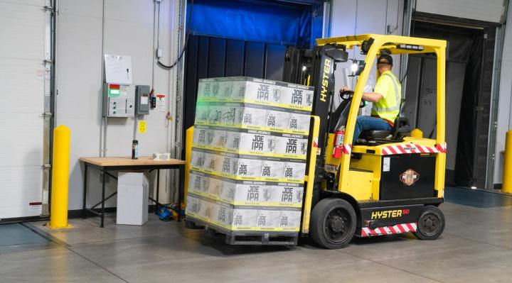

Sustainability is swiftly becoming a hot topic in business. For some companies and industries, this has been the result of the stark realization of just how damaging their practices are to the environment. For others, increasing consumer demand for businesses they support to have a positive impact has forced them to rethink their priorities. One recent study reported that 88% of those consumers polled stated they wanted brands to actively help them be more environmentally-friendly and ethical in their everyday lives.
Let’s explore how sustainability fits into manufacturing. In our ongoing quest to make our lives more environmentally-friendly, what expectations should we place on businesses and their products?

Design
Sustainability begins not with the product itself, but with the infrastructure of the design process. Thankfully, many manufacturers have already started to embrace more sustainable, paperless methods of undertaking the design process. Computer-aided design (CAD) software, coupled with the use of graphics tablets, with files shared between departments via the cloud has become the norm. While it’s fair to say this is largely due to efficiency rather than sustainability, it’s important to note there are no good economic or practical excuses not to go paperless in product design.
Material
Manufacturers have become acutely aware of how raw materials are finite resources and have started to embrace solutions with less of a detrimental impact on the environment. According to one report, the use of bioplastics — materials produced from renewable biomass sources — are expected to grow from 2.1 million tons in 2019 to 2.4 million tons in 2024. Even with this growth in manufacturing, it is expected the land used to grow the materials for these bioplastics will remain the same.
We can also expect the future of sustainable products to include the implementation of carbon reduced manufacturing methods. Big industry players are already setting out their commitments to reduce the footprint their processes leave.
Distribution
Products are sustainable not only by the materials and processes used to make them. We have to consider whether the methods used to get them to us, and how we live with them, also make an impact on the environment.
One of the main points of consideration is greener shipping methods. Packaging is already a focus, with 11 major corporations — including Nestle, PepsiCo, and Unilever — taking a pledge during 2018’s World Economic Forum to ensure all their packaging is reused, recycled, or composted by 2025. There are also efforts to utilize methods that reduce emissions from delivery driving. UPS recently ordered 10,000 electric delivery vehicles, and autonomous technology — including drones — are being explored for last-mile deliveries in the logistics industry.
Conclusion
We all benefit from an industrial age that makes convenient products accessible to us all. But this also presents environmental risks. Manufacturers are already starting to embrace methods of design, production, and shipping to reduce their negative impact. However, it is also up to us as consumers to continue sending the message — through social media, direct contact, and our purchasing decisions — we do not just prioritize sustainability, we demand it.